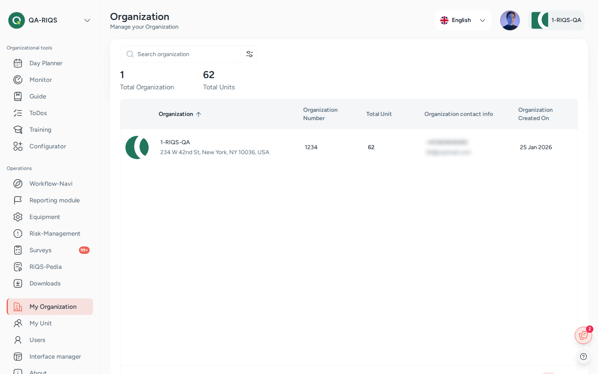
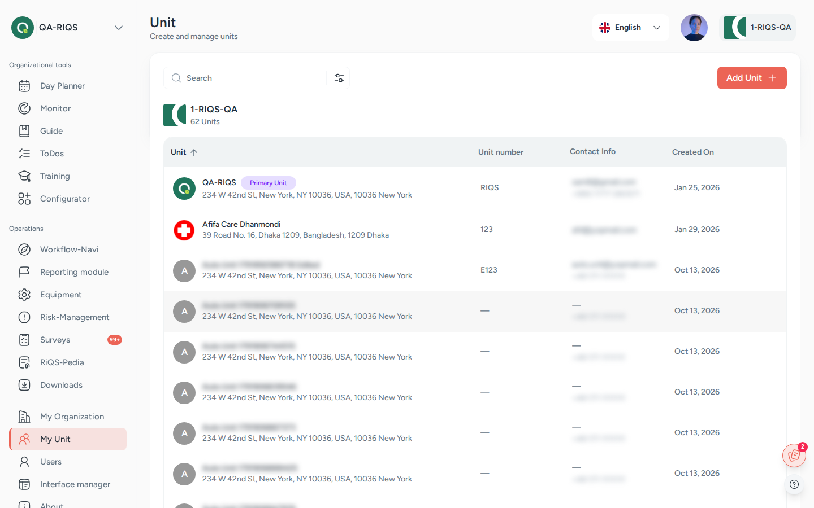

Organisation & units¶
In one sentence: Set up the customer organisation, its units (teams, sites, practices) and the settings each unit needs before daily work can start. Menu: My Organization (RiQS Administrators: Organizations) · My Unit (the unit list, titled Unit) · Status: Live (some parts planned, see below)

My Organization: the organisation with its number of units and contact details. Screens show test data.

My Unit: the units of the organisation; the primary unit is marked. Screens show test data.
What it is¶
RIQS is built in layers. An organisation is the customer company, for example "Medical Centre North Ltd.". It holds the subscription, the billing and a few organisation-wide settings. Inside it there are one or more units: a team, a site or a practice, for example "Practice Zurich". Almost all daily work (documents, shift plans, tasks, reports) happens inside a unit. Several organisations can also be looked after together as a group by a Group Administrator. See How RIQS is organised.
Think of it like a company building: the organisation is the building with one address and one electricity bill, and each unit is an office on its own floor, with its own team, its own filing cabinets and its own contact list.
This page covers the organisation profile, the unit profile and the unit settings: contact list, categories, qualification groups, the reporting set-up, Cirrnet and fault groups. Subscription and payment have their own page: Subscription & billing. People and roles are on Users.
Key terms¶
| Term | Meaning |
|---|---|
| Group | Several organisations managed together by a Group Administrator. |
| Organisation | The customer company. Holds subscription, billing, theme (logo and colours) and external reporting offices. |
| Unit | A team, site or practice inside an organisation. In some screens it is called a Client. |
| Organisation Admin / Deputy Admin | The two named contact persons of the organisation. They are the billing contacts and can see billing. |
| Primary unit | The unit a user belongs to first. RIQS opens it after login. |
| RIQS version | Each unit runs either the Regular Version or the "Audit save" Version (audit-safe mode). In audit-safe mode almost nothing can be deleted. |
| Contact list | The unit's address book of suppliers and service providers (shown as Contact List). |
| Categories / sub categories | The unit's own list of topics used to sort content in other modules. |
| Qualification & authorisation groups | Shown as Qualifications & Permits. Lists which devices and activities the unit is allowed to perform. |
| Reporting scope | For each reporting module (CIRS, complaints, ideas, hints, employee feedback, faults): Organisational, Unit with insight or Unit without insight. |
| Cirrnet | The Swiss national network for sharing critical incident reports. A unit can forward CIRS reports to it. |
| Fault groups | Shown as Malfunction Group. Groups used to sort equipment fault reports. |
| Clone | Copy entries (categories, contacts, qualification groups, fault groups) from one unit into another. |
Who uses it¶
| Role | What they typically do here |
|---|---|
| RiQS Administrator | Creates organisations for invoice customers, sees every organisation and unit, deletes organisations, deletes anything in audit-safe mode, changes a unit back from audit-safe mode. |
| Group Administrator | Looks after all organisations of the group: creates organisations online, edits and deactivates organisations, creates, edits, deactivates and deletes units, sets up unit settings and clones them between units. |
| Administrator | Looks after the own organisation and all its units: edits and deactivates the organisation, creates, edits, deactivates and deletes units, clones unit settings, adds external reporting offices. |
| Power User | Keeps the own unit's profile and settings up to date (contacts, categories, qualification groups, fault groups), sets up Cirrnet. |
| Management | Reads the unit profile, maintains contacts, categories and qualification groups; works on fault groups as Fault Officer. |
| Professional | Reads the unit profile and contact list, adds contacts; works on fault groups as Fault Officer. |
How it works¶
Organisation created → Units created → Unit settings filled in → Users added → Daily work
- The organisation is created. Either a RiQS Administrator creates it for a customer who pays by invoice, or the customer signs up online and pays (see Subscription & billing). The organisation gets a name, address, contact details, a subscription and a theme (logo and colours).
- Units are created under the organisation. Each unit gets a name, an address, a number of full-time users, its RIQS version (regular or audit-safe), the modules it may use (Access Control) and its reporting set-up.
- Unit settings are filled in on the unit's Information tab: contact list, categories, qualification groups, Cirrnet and fault groups.
- Users are added to the unit (see Users).
- Units are kept up to date or, when no longer needed, deleted.
Where you land: - RiQS Administrators and Group Administrators see the list of organisations and the list of units. - Administrators land on their own organisation (menu My Organization). - Power Users, Management and Professionals open My Unit / My Organization and land directly on their own unit's page.
Unit page tabs: Information (profile and settings, everyone) and Billing details (not shown to Management and Professional).
Organisation page tabs: Overview (profile, administration, purchase rights, external reporting offices, colours, usage, list of units) and Billing details.
RIQS version of a unit:
Regular Version → "Audit save" Version (one way for normal users)
"Audit save" Version → Regular Version (RiQS Administrator only)
How to …¶
How to create an organisation for a customer¶
Who can do this: RiQS Administrator. A Group Administrator can also create an organisation online (paid online or on invoice), see Subscription & billing. 1. Open Organizations and click Add organisation. 2. Step General Information: enter the name, organisation number, membership, website, customer software, computer system, address and contact details. 3. Step Subscription: choose the package, number of full-time users (5 to 500), business year start, responsible person, payment method (By Invoice is the default, Online Payment is also possible) and optional extras (tokens, storage, e-signatures). The estimated bill updates as you type. 4. Step Theme customisation: upload a logo and choose the primary and secondary colour. 5. Click Save.
Result: The organisation appears in the list. Customers can also sign up themselves online, see Subscription & billing.
How to edit the organisation profile or branding¶
Who can do this: RiQS Administrator, Group Administrator, Administrator 1. Open the organisation and click Edit. 2. Change General Information or Theme customisation (logo, colour scheme). 3. Click Update.
Result: The new details and colours are shown in the app.
How to add an external reporting office¶
Who can do this: RiQS Administrator, Administrator 1. Open the organisation's Overview tab and go to Reporting offices. 2. Click Add external office. 3. Enter name, contact person, email, phone, location and choose Reporting office for (which reporting modules it handles). 4. Click Save.
Result: The office is listed. An organisation can have at most 2 external offices.
How to create a unit¶
Who can do this: RiQS Administrator, Group Administrator, Administrator 1. Open the list of units and click Add New Unit. 2. Step 1 (Unit information): choose the organisation, choose the RIQS Version, then enter name, unit number, membership, Number of full-time users (at least 5), website, customer software, computer system, address and phone. Tick Address same as organisation to copy the address. 3. Under Reporting Module, choose the scope for each module (Organisational, Unit with insight, Unit without insight). For CIRS and Fault Management, also choose who may see the reports (All or Officer). 4. Click Next. Step 2 (Access Control): switch on the modules this unit may use. Some standard modules are always on and cannot be switched off. 5. Click Save.
Result: "Unit created successfully". The unit appears in the list and in the unit switcher.
How to edit a unit¶
Who can do this: RiQS Administrator, Group Administrator, Administrator, Power User 1. Open the unit and click Edit (or the three-dot menu). 2. Change the information, address, access control or reporting set-up. 3. Click Save.
Result: "Unit updated successfully".
How to add contacts, categories and qualification groups¶
Who can do this: contacts: everyone (Professionals can add contacts but not edit them); categories and qualification groups: everyone except Professional 1. Open the unit's Information tab. 2. Contact List: click Add Contact, choose the supplier category (supplier of goods, service provider, external supplier), and enter the company, address, customer number, VAT number and up to 3 contact persons (one marked Primary Contact). You can attach files. Import Contacts loads contacts in bulk. 3. Categories: click Add Category, enter the Category Name and, if needed, add sub categories. Click Save Category. 4. Qualifications & Permits: click Add Qualification and enter the group.
Result: The entries are shown on the unit page and can be used in other modules.
How to clone settings from another unit¶
Who can do this: RiQS Administrator, Group Administrator, Administrator. Fault groups can also be cloned by Power Users, Management and Professionals who are Fault Officer of the organisation. 1. Open the unit that should receive the data. 2. Click the clone button next to the section (Clone category, Clone for suppliers group, Clone for qualification or fault groups). 3. Tick the entries to copy (or Select all) and confirm.
Result: "Category cloned successfully" (or similar). The copies are independent of the originals.
How to switch on Cirrnet forwarding¶
Who can do this: RiQS Administrator, Group Administrator, Administrator, Power User 1. Open the unit's Information tab and go to Cirrnet Configuration. 2. Switch on CIRRNET Forwarding. 3. Click Add under Cirrnet credentials and enter the Cirrnet username and password.
Result: The section shows "Cirrnet already connected". CIRS reports can now be forwarded to Cirrnet.
How to delete a unit¶
Who can do this: RiQS Administrator, Group Administrator, Administrator (regular version). In audit-safe mode only the RiQS Administrator. 1. Open the unit and click the three-dot menu, then Delete. 2. Confirm with Yes.
Result: "Successfully deleted". If the unit is the primary unit of the Organisation Admin or Deputy Admin, a warning explains that it cannot be deleted.
Rules to know¶
- Full-time users per unit: at least 5, at most 500. Only active users count against the limit (see Users).
- Audit-safe mode is one-way for customers. A unit can be switched from Regular Version to "Audit save" Version by RiQS Administrators, Group Administrators, Administrators and Power Users. Once audit-safe, the switch is locked for everyone except the RiQS Administrator.
- Delete in audit-safe mode: only the RiQS Administrator can delete units and unit settings.
- A unit cannot be deleted if it is the primary unit of the Organisation Admin or the Deputy Admin.
- A category or sub category cannot be deleted once it is used somewhere else. Deactivate it instead.
- Fault groups: RiQS Administrators, Group Administrators, Administrators and Power Users may add, edit, deactivate and delete fault groups. Management and Professionals may do this only as Fault Officer. Cloning fault groups to another unit: RiQS Administrator, Group Administrator and Administrator, and other roles only as Fault Officer of the organisation. A fault group that is already used in a fault report cannot be deleted (except by the RiQS Administrator).
- External reporting offices: at most 2 per organisation.
- Organisation delete: only the RiQS Administrator. RIQS shows a warning when something blocks the delete.
- Deactivate: organisations and units can be deactivated by the RiQS Administrator, Group Administrator and Administrator. Contacts, categories and qualification groups can be deactivated by everyone except Professional.
- Unit switching: RiQS Administrators, Group Administrators and Administrators change unit with the Unit Switcher in the sidebar. Other users who belong to several units choose the unit when they log in. RIQS always opens the user's primary unit by default.
- Planned: the organisation tabs Group Builder and Roles & Permit exist in design but are not shown yet.
Who can do what¶
| Action | RiQS Administrator | Group Administrator | Administrator | Power User | Management | Professional |
|---|---|---|---|---|---|---|
| See all organisations and units | ✅ | ❌ | ❌ | ❌ | ❌ | ❌ |
| See own organisation with all its units | ✅ | ✅ | ✅ | ❌ | ❌ | ❌ |
| Create organisation on invoice (Add organisation) | ✅ | ❌ | ❌ | ❌ | ❌ | ❌ |
| Create organisation online (paid online or on invoice) | ✅ | ✅ | ❌ | ❌ | ❌ | ❌ |
| Edit organisation | ✅ | ✅ | ✅ | ❌ | ❌ | ❌ |
| Deactivate organisation | ✅ | ✅ | ✅ | ❌ | ❌ | ❌ |
| Delete organisation | ✅ | ❌ | ❌ | ❌ | ❌ | ❌ |
| Add external reporting office | ✅ | ❌ | ✅ | ❌ | ❌ | ❌ |
| See own unit | ✅ | ✅ | ✅ | ✅ | ✅ | ✅ |
| Create unit | ✅ | ✅ | ✅ | ❌ | ❌ | ❌ |
| Edit unit | ✅ | ✅ | ✅ | ✅ | ❌ | ❌ |
| Deactivate unit | ✅ | ✅ | ✅ | ❌ | ❌ | ❌ |
| Delete unit (regular version) | ✅ | ✅ | ✅ | ❌ | ❌ | ❌ |
| Switch unit to audit-safe | ✅ | ✅ | ✅ | ✅ | ❌ | ❌ |
| Switch unit back to regular | ✅ | ❌ | ❌ | ❌ | ❌ | ❌ |
| Delete anything in audit-safe mode | ✅ | ❌ | ❌ | ❌ | ❌ | ❌ |
| See contacts (unit and supplier details) | ✅ | ✅ | ✅ | ✅ | ✅ | ✅ |
| Add contacts | ✅ | ✅ | ✅ | ✅ | ✅ | ✅ |
| Edit / deactivate contacts | ✅ | ✅ | ✅ | ✅ | ✅ | ❌ |
| Delete contacts (regular version) | ✅ | ✅ | ✅ | ✅ | ❌ | ❌ |
| Download contact list | ✅ | ✅ | ✅ | ✅ | ✅ | ✅ |
| Add / edit / deactivate categories | ✅ | ✅ | ✅ | ✅ | ✅ | ❌ |
| Delete categories (regular version) | ✅ | ✅ | ✅ | ✅ | ❌ | ❌ |
| Add / deactivate qualification groups | ✅ | ✅ | ✅ | ✅ | ✅ | ❌ |
| Delete qualification groups (regular version) | ✅ | ✅ | ✅ | ✅ | ✅ | ❌ |
| Clone contacts, categories, qualification groups between units | ✅ | ✅ | ✅ | ❌ | ❌ | ❌ |
| Switch Cirrnet on / off, add Cirrnet credentials | ✅ | ✅ | ✅ | ✅ | ❌ | ❌ |
| Add / edit / deactivate fault groups | ✅ | ✅ | ✅ | ✅ | only as Fault Officer | only as Fault Officer |
| Delete fault groups (regular version) | ✅ | ✅ | ✅ | ✅ | only as Fault Officer | only as Fault Officer |
| Clone fault groups between units | ✅ | ✅ | ✅ | only as Fault Officer of the organisation | only as Fault Officer of the organisation | only as Fault Officer of the organisation |
| See unit Billing details tab | ✅ | ✅ | ✅ | ✅ | ❌ | ❌ |
Connected modules¶
- Users: every user belongs to at least one unit; the unit's full-time user number limits how many users can be active.
- Subscription & billing: the organisation's subscription; storage, tokens and e-signatures can be shared out to units.
- Incident Reports: uses the reporting scope, the visibility setting, Cirrnet and the fault groups set here.
- Equipment: uses the contact list (suppliers) and fault groups.
- Most modules (tasks, trainings, documents, risks) use the unit's categories.
Open questions¶
- Fault groups for Power Users: the Roles & Rights sheet lets Power Users add, edit, deactivate and delete fault groups without the Fault Officer function. The feature list speaks of "an admin or Fault Manager". This page follows the sheet. Please confirm.
- Deactivating an organisation or unit: the Roles & Rights sheet lists "deactivate" for organisations and units, but there is no Deactivate action on these screens yet. Is it planned?
- External reporting offices: the Roles & Rights sheet does not say who may add them. Is it RiQS Administrator and Administrator only, or also Group Administrator?
- Menu names: the left menu shows Organizations, My Organization and My Unit depending on role; some screens say "Units". Which names are final?
Last reviewed: 2026-10-26